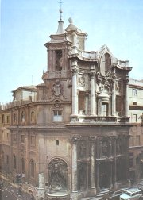
Borrominiho průčelí kostela San Carlo v Římě
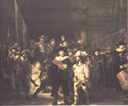
Rembrandt: Noční hlídka
|
SVĚTOVÉ BAROKO
V Itálii a dalších katolických zemích se baroko prosadilo nejdříve a nejintenzivněji. Architekt Francesco Borromini (1599-1667) projektoval průčelí Oratoria di San Filippo Neri v Římě, Gian Lorenzo Bernini (1598-1680) vytvořil kolonádu před chrámem sv. Petra ve Vatikánu a řadu soch. Barokní malíři malovali hlavně náboženské a mytologické výjevy nebo portréty. Nejvíce prosluli Italové Caravaggio (1573-1610) a Giovanni Battista Tiepolo (1696-1770), Španělé Diego Velázquez (1599-1660) a Bartolomé Estéban Murillo (1618-1682) nebo Nizozemci Peter Paul Rubens (1577-1640), Rembrandt van Rijn (1606-1669) a Vermeer van Delft (1632-1675).
Rokoko, které se prosadilo v 18. stol., dovedlo barokní zdobnost do krajnosti. Místo temné duchovnosti nastoupila lehkost a jemnost, což je patrné na obrazech Francouzů Antoina Watteaua [vató] (1684-1721) a Jean-Honoré Fragonarda (1732-1806). V architektuře, výzdobě interiérů i předmětech denní potřeby převládlo filigránská provedení.
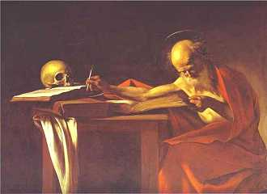
Caravaggio: Sv. Jeroným
|
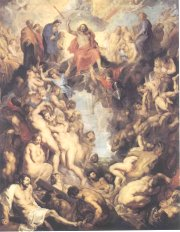
Rubens: Poslední soud
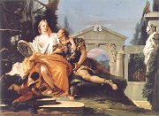
Tiepolo: Rinaldo a Armida
|
Torquato Tasso (1544-1595)
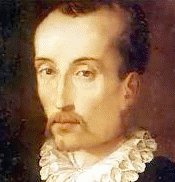
Italský básník Tasso je autorem eposu Osvobozený Jeruzalém a pastorály Aminta. Protože pochyboval o své pravověrnosti, vydal se do rukou inkvizice, ale byl shledán bohabojným. Postupující psychická choroba ho uvrhla na řadu let do izolace. Na popud papeže měl být slavnostně prohlášen za knížete básníků, ale této pocty se už nedožil.
|
Torquato Tasso: Osvobozený Jeruzalém
Rámec Tassova eposu Osvobozený Jeruzalém tvoří obléhání Jeruzaléma křižáky, které vede statečný Goffredo. Křesťané musejí zlomit nejen odpor muslimů, ale také ďáblových přisluhovačů, kteří jim pomáhají – mág Ismen začaruje blízký les a kouzelnice Armida uvězní hrdinu Rinalda na svém zámku. Rytíř Tankréd se zamiluje do pohanky Klorindy, ale události naberou tragický spád. Nakonec je Jeruzalém slavně dobyt.
Tasso si myslel, že je jeho dílo kacířské. Nejdříve se ho snažil vysvětlit (Obrana) a nakonec ho přepracoval (Dobytí Jeruzaléma). Druhá verze ale nedosáhla kvality původní.
|
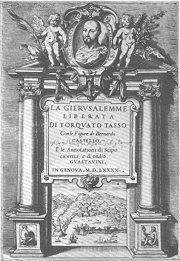
Torquato Tasso: Osvobozený Jeruzalém
Jak zemřela Klorinda?
|
Tereza z Ávily (1515-1582)
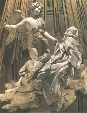
Bernini: Extáze sv. Terezy
|
Svatá Tereza z Ávily
Španělská spisovatelka Tereza z Ávily byla hluboce věřící. Prožívala extatické stavy a psala mystické básně. Založila řád bosých karmelitánek a řadu klášterů. Je autorkou spisů Kniha o vlastním životě, Vnitřní hrad čili Příbytky a Cesta k dokonalosti. V 17. stol. byla svatořečena.
|
Jan z Kříže (1542-1591)
Také španělský spisovatel Jan z Kříže byl členem řeholního řádu bosých karmelitánů. Nasal mystické básně Temná noc duše, Duchovní zpěv nebo Plamen lásky živý. V 18. stol. byl prohlášen za svatého.
Co víš o katolických řeholích?
Chtěl/a bys být mnichem (jeptiškou)? Proč?
Jakou formu má báseň sv. Terezy z Ávily?
Čím je tato báseň netradiční?
|
Luis de Góngora y Argote
(1561-1627)
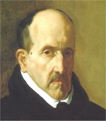
Španěl Góngora napsal velmi komplikované básnické skladby Báje o Ákidu a Galateii a Samoty. Hned po vydání je inkvizice zabavila. Jeho jménem se nazývá celý proud španělské poezie – góngorismus.
|
Luis de Góngora y Argote: Samoty
Góngora používal velmi složité metafory typické pro manýrismus. Bohužel nedokončené Samoty jsou plné odkazů na antickou mytologii a pohybují se na samé hranici srozumitelnosti. Popisují osudy mladíka, který navštěvuje různé kraje, poháněn milostnou touhou.
Góngora často používá neologismy. Také stavba jeho vět je nezvyklá. Vypravování bývá zavaleno množstvím odboček.
|
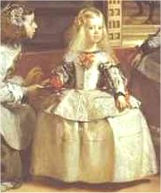
Velázquez: Dvorní dámy
Co víš o mytologických postavách z ukázky?
Vyber si úryvek ze Samot a nakresli k němu ilustraci.
|
Pedro Calderón della Barca (1600-1681)
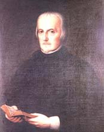
Španěl Calderón byl dvorním básníkem.
Napsal asi 200 her různých žánrů. K nejznámějším patří
Život je sen, Velké divadlo světa, Sudí zalamejský a Dáma skřítek.
|
Pedro Calderón della Barca: Život je sen
Hlavním hrdinou Calderónova dramatu Život je sen je princ Segismundo, který strávil celý život v žaláři. Jeho otec, polský král Basilio, tak chce předejít věštbě, podle níž by vládl příliš krutě. Protože už je starý, rozhodne se syna vyzkoušet, zda by si počínal pokorně nebo jako tyran. Nechá ho ve spánku přenést na zámek a řekne mu pravdu. Segismundo se rozzuří, a proto je (opět ve spánku) přenesen zpátky. Ve vězení se konečně změní. Když ho osvobodí vzbouřené vojsko, nepomstí se otci, ale prosí ho za odpuštění.
|
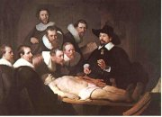
Rembrandt van Rijn: Anatomie doktora Tulpa
Které postavy vystupují v ukázkách?
Charakterizuj je.
O čem ukázky pojednávají?
Zdál se ti někdy velmi realistický sen? O čem?
|
John Donne (1571-1631)
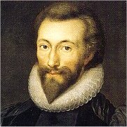
Anglický spisovatel John Donne [džon dan] byl původně katolík, ale přestoupil k anglikánům. Vyučoval teologii a kázal v londýnské katedrále sv. Pavla. Většina z jeho básní vyšla až posmrtně – Satiry a elegie, Písně a sonety, Duchovní básně, Svaté sonety.
|
John Donne: Písně a sonety
John Donne byl současníkem Shakespeara, proto bývá někdy řazen k renesanci. Jeho poezie má asi nejblíže k manýrismu – je formálně velmi vytříbená (Poslední vůle), myšlenkově náročná (Vzduch a andělé) a využívá erotické dvojsmysly (Blecha).
Na Donnovu tvorbu navázala škola metafyzických básníků.
|
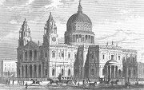
Katedrála sv. Pavla v Londýně
Co tě zaujalo na Donnových básních?
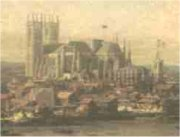
Canaletto: Pohled na Londýn
|
John Milton (1608-1674)
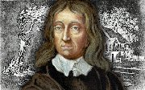
Angličan Milton se hlásil k puritánům a podporoval anglickou revoluci. Po pádu republiky a restauraci Stuartovců byl krátce vězněn a jeho spisy byly páleny. Na konci života píše eposy
Ztracený ráj a Ráj znovu dobytý.
|
John Milton: Ztracený ráj
Miltonovo rozsáhlé alegorické dílo Ztracený ráj popisuje Satanovu vzpouru proti Bohu, prvotní hřích a dějiny světa od jeho stvoření až do Miltonovy současnosti. Satan po svém pádu vybuduje město Pandémonii, svede Adama a Evu ke hříchu a sám se proměňuje v hada. Zemi ovládnou jeho potomci – Smrt a Hřích.
|
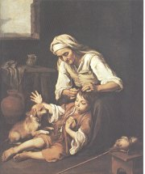
Murillo: Stařena
Co víš o Satanovi?
Co o sobě Satan říká v ukázce?
Jaký je Satan?
|
Hans Jakob Christoffel von Grimmelshausen
(1621-1676)
Německý prozaik Grimmelshausen prožil hrůzy třicetileté války na vlastní kůži. Byl odvlečen žoldáky z domova, což hrozilo i postavě Simplicia. Po válce konvertoval ke katolictví, otevřel si hostinec a začal psát knihy, které publikoval pod různými pseudonymy. Jeho nejznámějším dílem je trilogie pikareskních románů Dobrodružný Simplicius Simplicissimus, Divous Skočdopole a Poběhlice Kuráž – knihu zdramatizoval německý avantgardní spisovatel Bertolt Brecht (Matka Kuráž a její děti).
|
Grimmelshausen:
Dobrodružný Simplicius Simplicissimus
Grimmelshausenův román z třicetileté války Dobrodružný Simplicius Simplicissimus popisuje osudy titulního hrdiny, jehož jméno by se dalo přeložit jako Prosťáček Nejprostší. Simplicius utíká před vojáky, kteří vyplenili jeho domov. Usazuje se u poustevníka (ve skutečnosti je to šlechtic a jeho vlastní otec) a po jeho smrti putuje válčící Evropou. Zprvu se živí jako sluha, ale je všemi považován za blázna. Později se stane hercem, vojákem, mastičkářem, loupežníkem i kajícným poutníkem. S pomocí zázračného kamene navštíví jezerní království Sylfů, kteří ovládají podzemní vody. Po dobrodružství v Rusku se odvrací od hříšného světa a stává se opět poustevníkem.
|
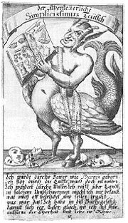
Dobová ilustrace
Charakterizuj postavu Simplicia Simplicissima.
Znáš obdobné postavy v jiných literaturách?
|
Andreas Gryphius (1616-1664)
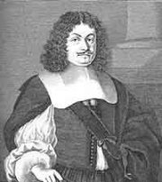
Německý (slezský) básník a dramatik Gryphius [grifijus] byl protestant. Psal především sonety.
|
Andreas Gryphius
Gryphiovy básně vystihují základní barokní pocit marnosti lidského snažení. Odvracejí se od radostí pozemského světa a často se v nich objevuje motiv smrti.
Měl Gryphius pravdu? Uměl/a bys mu oponovat?
Napiš báseň, která by byla pravým opakem Gryphia.
|
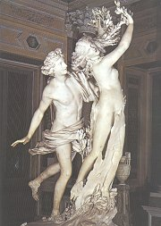
Bernini: Apollón a Dafné
|
Internetové stránky
Milton
Milton
Gryphius
Rembrandt
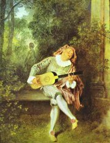
Watteau: Mezzetin
|
Doporučená četba
Calderón della Barca, Pedro: Život je sen, přel. V.Mikeš, Odeon, Praha 1981
Černý, Václav: Až do předsíně nebes, Čtrnáct studií o baroku našem i cizím, Mladá fronta, Praha 1996
Donne, John: Extáze, přel. H.Žantovská, Mladá fronta, Praha 1967
Donne, John: Komu zvoní hrana
Góngora y Argote, Luis de: Samoty, přel. J.Forbelský, Odeon, Praha 1970
Grimmelshausen, Hans Jakob Christoffel von: Dobrodružný Simplicius Simplicissimus, Kronika třicetileté války, přel. J.Zaorálek, Odeon, Praha 1976
Jungmann, Josef: Překlady I (Milton: Ztracený ráj)
Kéž hoří popel můj, Z poezie evropského baroka, Mladá fronta, Praha 1967
Labuť a růže, přel. E.A.Saudek, Praha 1966
Modlitby básníků, přel. A.Janoušková, Karmelitánské nakladatelství, Kostelní Vydří 1992
Růže ran, Z německé lyriky XVII. věku, přel. E.A.Saudek, SNKLHU, Praha 1959
Stín ráje, Tisíc let španělské poezie, přel. M.Uličný, Práce, Praha 1992
Škola noci, Anglická renesanční a barokní poezie, přel. Z.Hron
Tasso, Torquato: Osvobozený Jeruzalém, přel. J.Pokorný, Praha 1980
|
Připrav si referát o některé z uvedených knih nebo internetových stránek.
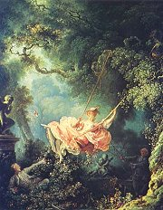
Fragonard: Šťastné náhody houpačky
|